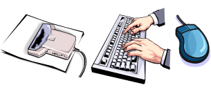
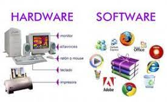

Hardware necesario para que el sistema de informaciónfuncione,
integrado por computadoras y equipos periféricos conectados a ellas.

Recurso humano:
Son las personas que interactúal con el sistema de información,suministran datos o utilizan el sistema para generar datos.
Fuente:
Son los datos e información que se introduce en el sistema, es decir,
son las entradas requeridas para que el sistema informático funcione.

Programas:
Software ejecutado por la computadora, el cual procesa la información
de entreda para generar los resultados esperados.
Telecomunicaciones:
Abarca el software y hardware que permite la transmisión
en forma electrónica de texto e imágenes, entre otros.

Políticas y reglas de operación:
Aplicadas a los procedimoientos y mecanismos para hacer que una aplicación de computadora
trabaje de acuerdo con estas o regir la parte funcional del proceso administrativo de la empresa.